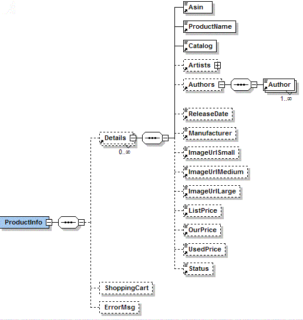

Using the Amazon Book Lookup Control
The Amazon Control API is as follows:
public ProductInfo lookupBook(String isbn)
This returns an XML Bean containing information about the book
identified by the supplied ISBN.
If the control is unable to perform the operation it will throw a ControlException.
The next section describes how to navigate the ProductInfo XML Bean.

ProductInfo may contain an ErrorMsg. If this element is present,
the book lookup did not succeed, and the error message should be logged
to the client.
If the book lookup succeeded, there will be a Details object that
contains data about the book. The meaning of the fields in the
Details object should be clear from their names, however, some require
comment. "Asin" is the ISBN for the book. ProductName is
the title of the book. The image URLs are absolute URLs to images
on the Amazon servers of the cover of the book.
Amazon Terms and Conditions
Amazon has clearly defined terms and conditions governing the use of
their web service apis. The Amazon Book Lookup control does not enforce these terms, so it is
up to you, the user of the control, to ensure that the terms are met.